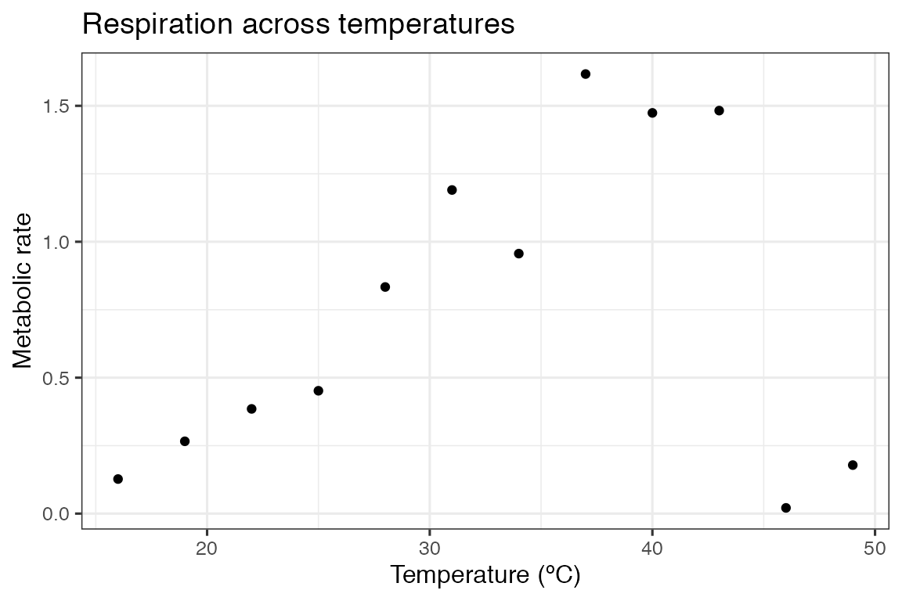
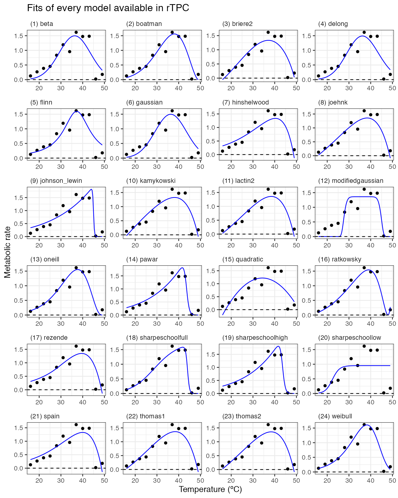

Fitting many models with rTPC
Daniel Padfield
2024-12-15
Source:vignettes/fit_many_models.Rmd
fit_many_models.RmdA brief example of how multiple models can be fitted to a single TPC using rTPC, nls.multstart, and the tidyverse.
Things to consider
- How many data points do you have for each curve? To fit all of the 24 models in rTPC, there needs to be a minimum of 7 points per curve.
- If there are multiple individual curves to be fit, it makes sense to have your data in long format, where grouping variables (e.g. unique curve identifier), temperature and rate have their own columns.
- Are there negative rate values? If a curve that crosses the x axis, it might be beneficial to only consider models that are capable of modelling negative values.
- Are there specific parameters you are interested in? If so, it may be beneficial to only consider models that explicitly include that parameter in their formulation.
# load packages
library(rTPC)
library(nls.multstart)
library(broom)
library(tidyverse)
# write function to label ggplot2 panels
label_facets_num <- function(string){
len <- length(string)
string = paste('(', 1:len, ') ', string, sep = '')
return(string)
}After searching the literature, rTPC contains 24 different model formulations previously used. The first vignette, demonstrated how to easily fit a single model to a single curve, here we will fit all 24 model formulations.
DISCLAIMER Although we fit all 24 model formulations, this is to demonstrate how they fit and their general shape, we do not recommend doing model selection on 24 model formulations.
We can demonstrate the fitting procedure of the 24 model formulations by taking a single curve from the example dataset rTPC - a dataset of 60 TPCs of respiration and photosynthesis of the aquatic algae, Chlorella vulgaris. We can plot the data using ggplot2
# load in data
data("chlorella_tpc")
# keep just a single curve
d <- filter(chlorella_tpc, curve_id == 1)
# show the data
ggplot(d, aes(temp, rate)) +
geom_point() +
theme_bw(base_size = 12) +
labs(x = 'Temperature (ºC)',
y = 'Metabolic rate',
title = 'Respiration across temperatures')
When fitting multiple models, we take advantage of list columns and functionality provided by purrr. A great introduction to this is the “Many Models” Chapter of R for Data Science.
For a single curve, we nest the dataframe, creating a list column which contains the temperature and rate values. We then create separate columns for each model fit using purrr::map(). Here, we use a gridstart approach when fitting models with nls_multstart(). This method creates a combination of start parameters, equally spaced across each of the starting parameter bounds. This can be specified with a vector of the same length as the number of parameters, c(5, 5, 5) for 3 estimated parameters will yield 125 iterations.
# fit every model formulation in rTPC
d_fits <- nest(d, data = c(temp, rate)) %>%
mutate(beta = map(data, ~nls_multstart(rate~beta_2012(temp = temp, a, b, c, d, e),
data = .x,
iter = c(6,6,6,6,6),
start_lower = get_start_vals(.x$temp, .x$rate, model_name = 'beta_2012') - 10,
start_upper = get_start_vals(.x$temp, .x$rate, model_name = 'beta_2012') + 10,
lower = get_lower_lims(.x$temp, .x$rate, model_name = 'beta_2012'),
upper = get_upper_lims(.x$temp, .x$rate, model_name = 'beta_2012'),
supp_errors = 'Y',
convergence_count = FALSE)),
boatman = map(data, ~nls_multstart(rate~boatman_2017(temp = temp, rmax, tmin, tmax, a,b),
data = .x,
iter = c(4,4,4,4,4),
start_lower = get_start_vals(.x$temp, .x$rate, model_name = 'boatman_2017') - 10,
start_upper = get_start_vals(.x$temp, .x$rate, model_name = 'boatman_2017') + 10,
lower = get_lower_lims(.x$temp, .x$rate, model_name = 'boatman_2017'),
upper = get_upper_lims(.x$temp, .x$rate, model_name = 'boatman_2017'),
supp_errors = 'Y',
convergence_count = FALSE)),
briere2 = map(data, ~nls_multstart(rate~briere2_1999(temp = temp, tmin, tmax, a,b),
data = .x,
iter = c(4,4,4,4),
start_lower = get_start_vals(.x$temp, .x$rate, model_name = 'briere2_1999') - 10,
start_upper = get_start_vals(.x$temp, .x$rate, model_name = 'briere2_1999') + 10,
lower = get_lower_lims(.x$temp, .x$rate, model_name = 'briere2_1999'),
upper = get_upper_lims(.x$temp, .x$rate, model_name = 'briere2_1999'),
supp_errors = 'Y',
convergence_count = FALSE)),
delong = map(data, ~nls_multstart(rate~delong_2017(temp = temp, c, eb, ef, tm, ehc),
data = .x,
iter = c(4,4,4,4,4),
start_lower = get_start_vals(.x$temp, .x$rate, model_name = 'delong_2017') - 10,
start_upper = get_start_vals(.x$temp, .x$rate, model_name = 'delong_2017') + 10,
lower = get_lower_lims(.x$temp, .x$rate, model_name = 'delong_2017'),
upper = get_upper_lims(.x$temp, .x$rate, model_name = 'delong_2017'),
supp_errors = 'Y',
convergence_count = FALSE)),
deutsch = map(data, ~nls_multstart(rate~deutsch_2008(temp = temp, rmax, topt, ctmax, a),
data = .x,
iter = c(4,4,4,4),
start_lower = get_start_vals(.x$temp, .x$rate, model_name = 'deutsch_2008') - 10,
start_upper = get_start_vals(.x$temp, .x$rate, model_name = 'deutsch_2008') + 10,
lower = get_lower_lims(.x$temp, .x$rate, model_name = 'deutsch_2008'),
upper = get_upper_lims(.x$temp, .x$rate, model_name = 'deutsch_2008'),
supp_errors = 'Y',
convergence_count = FALSE)),
flinn = map(data, ~nls_multstart(rate~flinn_1991(temp = temp, a, b, c),
data = .x,
iter = c(5,5,5),
start_lower = get_start_vals(.x$temp, .x$rate, model_name = 'flinn_1991') - 10,
start_upper = get_start_vals(.x$temp, .x$rate, model_name = 'flinn_1991') + 10,
lower = get_lower_lims(.x$temp, .x$rate, model_name = 'flinn_1991'),
upper = get_upper_lims(.x$temp, .x$rate, model_name = 'flinn_1991'),
supp_errors = 'Y',
convergence_count = FALSE)),
gaussian = map(data, ~nls_multstart(rate~gaussian_1987(temp = temp, rmax, topt, a),
data = .x,
iter = c(4,4,4),
start_lower = get_start_vals(.x$temp, .x$rate, model_name = 'gaussian_1987') - 10,
start_upper = get_start_vals(.x$temp, .x$rate, model_name = 'gaussian_1987') + 10,
lower = get_lower_lims(.x$temp, .x$rate, model_name = 'gaussian_1987'),
upper = get_upper_lims(.x$temp, .x$rate, model_name = 'gaussian_1987'),
supp_errors = 'Y',
convergence_count = FALSE)),
hinshelwood = map(data, ~nls_multstart(rate~hinshelwood_1947(temp = temp, a, e, b, eh),
data = .x,
iter = c(5,5,5,5),
start_lower = get_start_vals(.x$temp, .x$rate, model_name = 'hinshelwood_1947') - 1,
start_upper = get_start_vals(.x$temp, .x$rate, model_name = 'hinshelwood_1947') + 1,
lower = get_lower_lims(.x$temp, .x$rate, model_name = 'hinshelwood_1947'),
upper = get_upper_lims(.x$temp, .x$rate, model_name = 'hinshelwood_1947'),
supp_errors = 'Y',
convergence_count = FALSE)),
joehnk = map(data, ~nls_multstart(rate~joehnk_2008(temp = temp, rmax, topt, a, b, c),
data = .x,
iter = c(4,4,4,4, 4),
start_lower = get_start_vals(.x$temp, .x$rate, model_name = 'joehnk_2008') - 10,
start_upper = get_start_vals(.x$temp, .x$rate, model_name = 'joehnk_2008') + 10,
lower = get_lower_lims(.x$temp, .x$rate, model_name = 'joehnk_2008'),
upper = get_upper_lims(.x$temp, .x$rate, model_name = 'joehnk_2008'),
supp_errors = 'Y',
convergence_count = FALSE)),
johnson_lewin = map(data, ~suppressWarnings(nls_multstart(rate~ johnsonlewin_1946(temp = temp, r0, e, eh, topt),
data = .x,
iter = c(4,4,4,4),
start_lower = get_start_vals(.x$temp, .x$rate, model_name = 'johnsonlewin_1946') - 1,
start_upper = get_start_vals(.x$temp, .x$rate, model_name = 'johnsonlewin_1946') + 1,
lower = get_lower_lims(.x$temp, .x$rate, model_name = 'johnsonlewin_1946'),
upper = get_upper_lims(.x$temp, .x$rate, model_name = 'johnsonlewin_1946'),
supp_errors = 'Y',
convergence_count = FALSE))),
kamykowski = map(data, ~nls_multstart(rate~kamykowski_1985(temp = temp, tmin, tmax, a, b, c),
data = .x,
iter = c(4,4,4,4,4),
start_lower = get_start_vals(.x$temp, .x$rate, model_name = 'kamykowski_1985') - 10,
start_upper = get_start_vals(.x$temp, .x$rate, model_name = 'kamykowski_1985') + 10,
lower = get_lower_lims(.x$temp, .x$rate, model_name = 'kamykowski_1985'),
upper = get_upper_lims(.x$temp, .x$rate, model_name = 'kamykowski_1985'),
supp_errors = 'Y',
convergence_count = FALSE)),
lactin2 = map(data, ~nls_multstart(rate~lactin2_1995(temp = temp, a, b, tmax, delta_t),
data = .x,
iter = c(4,4,4,4),
start_lower = get_start_vals(.x$temp, .x$rate, model_name = 'lactin2_1995') - 10,
start_upper = get_start_vals(.x$temp, .x$rate, model_name = 'lactin2_1995') + 10,
lower = get_lower_lims(.x$temp, .x$rate, model_name = 'lactin2_1995'),
upper = get_upper_lims(.x$temp, .x$rate, model_name = 'lactin2_1995'),
supp_errors = 'Y',
convergence_count = FALSE)),
lrf = map(data, ~nls_multstart(rate~lrf_1991(temp = temp, rmax, topt, tmin, tmax),
data = d,
iter = c(3,3,3,3),
start_lower = get_start_vals(.x$temp, .x$rate, model_name = 'lrf_1991') - 10,
start_upper = get_start_vals(.x$temp, .x$rate, model_name = 'lrf_1991') + 10,
lower = get_lower_lims(.x$temp, .x$rate, model_name = 'lrf_1991'),
upper = get_upper_lims(.x$temp, .x$rate, model_name = 'lrf_1991'),
supp_errors = 'Y',
convergence_count = FALSE)),
modifiedgaussian = map(data, ~nls_multstart(rate~modifiedgaussian_2006(temp = temp, rmax, topt, a, b),
data = .x,
iter = c(4,4,4,4),
start_lower = get_start_vals(.x$temp, .x$rate, model_name = 'modifiedgaussian_2006') - 10,
start_upper = get_start_vals(.x$temp, .x$rate, model_name = 'modifiedgaussian_2006') + 10,
lower = get_lower_lims(.x$temp, .x$rate, model_name = 'modifiedgaussian_2006'),
upper = get_upper_lims(.x$temp, .x$rate, model_name = 'modifiedgaussian_2006'),
supp_errors = 'Y',
convergence_count = FALSE)),
oneill = map(data, ~nls_multstart(rate~oneill_1972(temp = temp, rmax, ctmax, topt, q10),
data = .x,
iter = c(4,4,4,4),
start_lower = get_start_vals(.x$temp, .x$rate, model_name = 'oneill_1972') - 10,
start_upper = get_start_vals(.x$temp, .x$rate, model_name = 'oneill_1972') + 10,
lower = get_lower_lims(.x$temp, .x$rate, model_name = 'oneill_1972'),
upper = get_upper_lims(.x$temp, .x$rate, model_name = 'oneill_1972'),
supp_errors = 'Y',
convergence_count = FALSE)),
pawar = map(data, ~nls_multstart(rate~pawar_2018(temp = temp, r_tref, e, eh, topt, tref = 15),
data = .x,
iter = c(4,4,4,4),
start_lower = get_start_vals(.x$temp, .x$rate, model_name = 'pawar_2018') - 10,
start_upper = get_start_vals(.x$temp, .x$rate, model_name = 'pawar_2018') + 10,
lower = get_lower_lims(.x$temp, .x$rate, model_name = 'pawar_2018'),
upper = get_upper_lims(.x$temp, .x$rate, model_name = 'pawar_2018'),
supp_errors = 'Y',
convergence_count = FALSE)),
quadratic = map(data, ~nls_multstart(rate~quadratic_2008(temp = temp, a, b, c),
data = .x,
iter = c(4,4,4),
start_lower = get_start_vals(.x$temp, .x$rate, model_name = 'quadratic_2008') - 0.5,
start_upper = get_start_vals(.x$temp, .x$rate, model_name = 'quadratic_2008') + 0.5,
lower = get_lower_lims(.x$temp, .x$rate, model_name = 'quadratic_2008'),
upper = get_upper_lims(.x$temp, .x$rate, model_name = 'quadratic_2008'),
supp_errors = 'Y',
convergence_count = FALSE)),
ratkowsky = map(data, ~nls_multstart(rate~ratkowsky_1983(temp = temp, tmin, tmax, a, b),
data = .x,
iter = c(4,4,4,4),
start_lower = get_start_vals(.x$temp, .x$rate, model_name = 'ratkowsky_1983') - 10,
start_upper = get_start_vals(.x$temp, .x$rate, model_name = 'ratkowsky_1983') + 10,
lower = get_lower_lims(.x$temp, .x$rate, model_name = 'ratkowsky_1983'),
upper = get_upper_lims(.x$temp, .x$rate, model_name = 'ratkowsky_1983'),
supp_errors = 'Y',
convergence_count = FALSE)),
rezende = map(data, ~nls_multstart(rate~rezende_2019(temp = temp, q10, a,b,c),
data = .x,
iter = c(4,4,4,4),
start_lower = get_start_vals(.x$temp, .x$rate, model_name = 'rezende_2019') - 10,
start_upper = get_start_vals(.x$temp, .x$rate, model_name = 'rezende_2019') + 10,
lower = get_lower_lims(.x$temp, .x$rate, model_name = 'rezende_2019'),
upper = get_upper_lims(.x$temp, .x$rate, model_name = 'rezende_2019'),
supp_errors = 'Y',
convergence_count = FALSE)),
sharpeschoolfull = map(data, ~nls_multstart(rate~sharpeschoolfull_1981(temp = temp, r_tref,e,el,tl,eh,th, tref = 15),
data = .x,
iter = c(4,4,4,4,4,4),
start_lower = get_start_vals(.x$temp, .x$rate, model_name = 'sharpeschoolfull_1981') - 10,
start_upper = get_start_vals(.x$temp, .x$rate, model_name = 'sharpeschoolfull_1981') + 10,
lower = get_lower_lims(.x$temp, .x$rate, model_name = 'sharpeschoolfull_1981'),
upper = get_upper_lims(.x$temp, .x$rate, model_name = 'sharpeschoolfull_1981'),
supp_errors = 'Y',
convergence_count = FALSE)),
sharpeschoolhigh = map(data, ~nls_multstart(rate~sharpeschoolhigh_1981(temp = temp, r_tref,e,eh,th, tref = 15),
data = .x,
iter = c(4,4,4,4),
start_lower = get_start_vals(.x$temp, .x$rate, model_name = 'sharpeschoolhigh_1981') - 10,
start_upper = get_start_vals(.x$temp, .x$rate, model_name = 'sharpeschoolhigh_1981') + 10,
lower = get_lower_lims(.x$temp, .x$rate, model_name = 'sharpeschoolhigh_1981'),
upper = get_upper_lims(.x$temp, .x$rate, model_name = 'sharpeschoolhigh_1981'),
supp_errors = 'Y',
convergence_count = FALSE)),
sharpeschoollow = map(data, ~nls_multstart(rate~sharpeschoollow_1981(temp = temp, r_tref,e,el,tl, tref = 15),
data = .x,
iter = c(4,4,4,4),
start_lower = get_start_vals(.x$temp, .x$rate, model_name = 'sharpeschoollow_1981') - 10,
start_upper = get_start_vals(.x$temp, .x$rate, model_name = 'sharpeschoollow_1981') + 10,
lower = get_lower_lims(.x$temp, .x$rate, model_name = 'sharpeschoollow_1981'),
upper = get_upper_lims(.x$temp, .x$rate, model_name = 'sharpeschoollow_1981'),
supp_errors = 'Y',
convergence_count = FALSE)),
spain = map(data, ~nls_multstart(rate~spain_1982(temp = temp, a,b,c,r0),
data = .x,
iter = c(4,4,4,4),
start_lower = get_start_vals(.x$temp, .x$rate, model_name = 'spain_1982') - 1,
start_upper = get_start_vals(.x$temp, .x$rate, model_name = 'spain_1982') + 1,
lower = get_lower_lims(.x$temp, .x$rate, model_name = 'spain_1982'),
upper = get_upper_lims(.x$temp, .x$rate, model_name = 'spain_1982'),
supp_errors = 'Y',
convergence_count = FALSE)),
thomas1 = map(data, ~nls_multstart(rate~thomas_2012(temp = temp, a,b,c,tref),
data = .x,
iter = c(4,4,4,4),
start_lower = get_start_vals(.x$temp, .x$rate, model_name = 'thomas_2012') - 1,
start_upper = get_start_vals(.x$temp, .x$rate, model_name = 'thomas_2012') + 2,
lower = get_lower_lims(.x$temp, .x$rate, model_name = 'thomas_2012'),
upper = get_upper_lims(.x$temp, .x$rate, model_name = 'thomas_2012'),
supp_errors = 'Y',
convergence_count = FALSE)),
thomas2 = map(data, ~nls_multstart(rate~thomas_2017(temp = temp, a,b,c,d,e),
data = .x,
iter = c(3,3,3,3,3),
start_lower = get_start_vals(.x$temp, .x$rate, model_name = 'thomas_2017') - 10,
start_upper = get_start_vals(.x$temp, .x$rate, model_name = 'thomas_2017') + 10,
lower = get_lower_lims(.x$temp, .x$rate, model_name = 'thomas_2017'),
upper = get_upper_lims(.x$temp, .x$rate, model_name = 'thomas_2017'),
supp_errors = 'Y',
convergence_count = FALSE)),
weibull = map(data, ~nls_multstart(rate~weibull_1995(temp = temp, a,topt,b,c),
data = .x,
iter = c(4,4,4,4),
start_lower = get_start_vals(.x$temp, .x$rate, model_name = 'weibull_1995') - 10,
start_upper = get_start_vals(.x$temp, .x$rate, model_name = 'weibull_1995') + 10,
lower = get_lower_lims(.x$temp, .x$rate, model_name = 'weibull_1995'),
upper = get_upper_lims(.x$temp, .x$rate, model_name = 'weibull_1995'),
supp_errors = 'Y',
convergence_count = FALSE)))This gives us a dataframe with our grouping variables
curve_id, growth_temp, process,
and flux first (not used here, but demonstrate how this can
be scaled to multiple curves). Next is our data column
which contains our temperature and rate data. Then is a column for each
of our models.
glimpse(select(d_fits, 1:7))
#> Rows: 1
#> Columns: 7
#> $ curve_id <dbl> 1
#> $ growth_temp <dbl> 20
#> $ process <chr> "acclimation"
#> $ flux <chr> "respiration"
#> $ data <list> [<tbl_df[12 x 2]>]
#> $ beta <list> [function () , resid, function () , rhs, function () , for…
#> $ boatman <list> [function () , resid, function () , rhs, function () , for…Each column containing the model stores the actual model fit.
d_fits$beta[[1]]
#> Nonlinear regression model
#> model: rate ~ beta_2012(temp = temp, a, b, c, d, e)
#> data: data
#> a b c d e
#> 1.132 36.671 33.113 1.682 1.407
#> residual sum-of-squares: 1.575
#>
#> Number of iterations till stop: 97
#> Achieved convergence tolerance: 1.49e-08
#> Reason stopped: Number of calls to `fcn' has reached or exceeded `maxfev' == 600.The parameters from each model fit can be extracted using broom::tidy(). However, as each model has parameters with different meanings, this may not be very useful in this instance.
The predictions of each model can be estimated using broom::augment(). This can be done on all models at once after the models are stacked into long format. To create a smooth curve fit, the predictions are done on a new temperature vector that has 100 points over the temperature range. The predictions for each model formulation are then visualised in ggplot2.
# stack models
d_stack <- select(d_fits, -data) %>%
pivot_longer(., names_to = 'model_name', values_to = 'fit', beta:weibull)
# get parameters using tidy
params <- d_stack %>%
mutate(., est = map(fit, tidy)) %>%
select(-fit) %>%
unnest(est)
# get predictions using augment
newdata <- tibble(temp = seq(min(d$temp), max(d$temp), length.out = 100))
d_preds <- d_stack %>%
mutate(., preds = map(fit, augment, newdata = newdata)) %>%
select(-fit) %>%
unnest(preds)
# plot
ggplot(d_preds, aes(temp, rate)) +
geom_point(aes(temp, rate), d) +
geom_line(aes(temp, .fitted), col = 'blue') +
facet_wrap(~model_name, labeller = labeller(model_name = label_facets_num), scales = 'free', ncol = 5) +
theme_bw(base_size = 12) +
theme(legend.position = 'none',
strip.text = element_text(hjust = 0),
strip.background = element_blank()) +
labs(x = 'Temperature (ºC)',
y = 'Metabolic rate',
title = 'Fits of every model available in rTPC') +
geom_hline(aes(yintercept = 0), linetype = 2)
Troubleshooting curve fits
If any of the fits do not converge properly, there are things you can try:
- Turning errors and warnings on using
supp_errors = 'N'inside nls_multstart() should help identify potential problems. - Change from the gridstart approach to the shotgun approach of fitting models with nls_multstart()
- Change the boundaries of
start_lowerandstart_upper. In most of these fits, we just +/- 10 from the output of get_start_vals(). Sometimes we had to change this value to +/- 1 to get reproducible fits. - Remove
lowerandupperarguments from the fitting process.